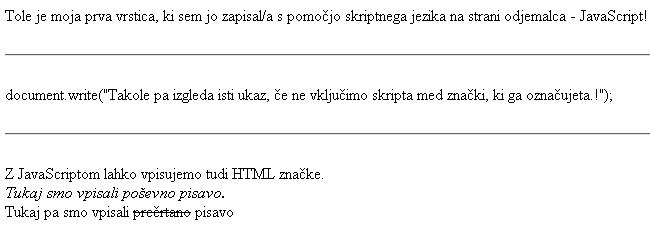

Knjige so hladni, a zvesti prijatelji. (Sokrat)
 Slika 1 in 2: Primer kode JavaScripta - koda in videz spletne strani
1. V tvoji mapi na trdem disku in na USB kljuèu naredi podmapo z imenom "javascript". V to mapo boš shranjeval/a vse dokumente, ki jih boš izdelal/a pri obravnavi uènih enot s podroèja JavaScripta. 2. Izdelaj spletno stran, ki bo izgledala tako, kot kažeta sliki 1 in 2. Datoteko poimenuj "03apriimek.html". Ne pozabi na konènico ".html". POZOR: Najprej NATANÈNO izdelaj vajo v tej uèni enoti in jo pokaži profesorju, nato zapiši odgovore na spodnja vprašanja. 3. V kodo primera v tej uèni enoti vstavi spodaj navedene komentarje na ustrezna mesta, ki jih ti komentarji pojasnjujejo. //Uporaba znaèke za poševno pisavo. //Uporaba znaèke za vodoravno èrto. //Uporaba znaèke za preèrtano pisavo. //Znaèka, ki oznaèuje konec skripta. //Znaèka, ki oznaèuje zaèetek skripta. 4. Kodo primera v tej uèni enoti spremeni tako, da bo vsebovala še dve vrstici izpisa. V prvi vrstici naj bo tvoje ime in priimek, v drugi vrsti pa poln domaè naslov. 1. Vprašanja za usmerjanje pozornosti in usvajanje novih besed: 1. Zapiši znaèko, ki oznaèuje zaèetek kode JavaScripta na spletni strani, zapisani v HTML. 2. Zapiši znaèko, ki oznaèuje konec kode JavaScripta na spletni strani, zapisani v HTML. 3. Zapiši ukaz za izpis besedila v JavaScriptu. 4. Zapiši lastnost znaèke <script>, ki doloèa, kateri skriptni jezik je uporabljen. 5. Kako torej oznaèimo vkljuèeni JavaScript na HTML spletno stran? 2. Zapiši od ene do pet kljuènih besed, ki povzemajo vsebino te uène enote. 3. Vprašanja za razmislek in povezovanje z lastno izkušnjo: 1. Koliko blokov ukazov JavaScripta lahko vidimo v kodi na sliki 1? 2. Zapiši ukaz JavaScripta, ki pomeni zapisovanje besedila; najdeš ga v primeru te uène enote. 3. Kolikokrat smo v primeru na sliki uporabili ukaz JavaScripta za zapisovanje besedila? 4. Kateri od ukazov JavaScripta za zapisovanje besedila v primeru na sliki ne deluje pravilno? Prepiši ga v zvezek v celoti, torej skupaj z argumentom (argument je spremenljivka - besedilo v oklepaju tega ukaza; tega ukaz tudi izpiše. 5. Kakšen pogoj mora biti torej izpolnjen, da bo brskalnik kodo JavaScripta pravilno prebral? 6. Zapiši vse HTML znaèke, ki so v primeru na sliki zapisane s pomoèjo JavaScripta. 4. Domaèa naloga: 1. V zvezek prepiši misel, ki je zapisana na zaèetku uène enote z rdeèimi èrkami. Zabeleži nekaj lastnih misli, ki se ti utrnejo ob razmišljanju o njej. 2. Odgovori na vprašanja, na katere nisi uspel/a odgovoriti v šoli. 5. DODATNO DELO: |